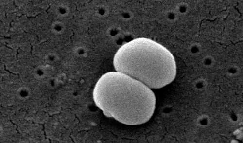
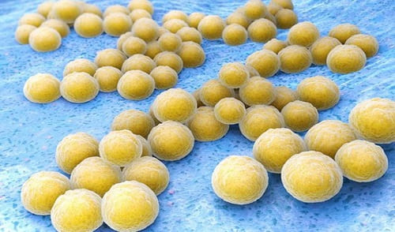
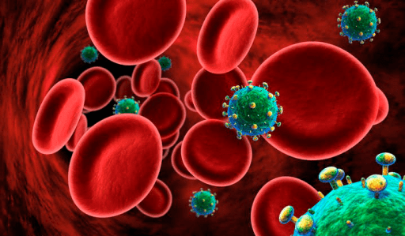

Не перестаю удивляться тому, какое множество людей в самых разных уголках мира не имеют ни малейшего представления о животных, живущих с ними бок о бок.
Дж. Даррелл
Кокки – это бактерии овальной или сферической формы (греческое слово kokkos переводится как «зернышко»). Сотни самых разнообразных кокков окружают человека в течение всей его жизни, но нет, пожалуй, микроба более известного, чем стафилококк.
Микробиологический термин staphylococcus был введен в медицинскую практику в далеком 1881 г. Под микроскопом видно, что кокки собираются в группы, похожие на гроздь винограда, отсюда и название, ибо staphylos по-гречески как раз и означает «гроздь».
Слово это – «стафилококк» – известно сейчас практически всем и мало у кого вызывает положительные эмоции. Десятки болезней людей и зверей обязаны своим возникновением именно стафилококку, при лечении этих болезней врачи испытывают серьезные трудности, нет на земном шаре человека, у которого хотя бы раз в жизни не возникли проблемы со здоровьем, связанные именно со стафилококком.
Стафилококки – это целый род микроорганизмов, на сегодня известно уже 27 видов, при этом 14 видов обнаружены на коже и слизистых оболочках человека. Большинство стафилококков абсолютно безвредны: из упомянутых 14 видов только три способны вызывать болезни, но и этих трех более чем достаточно…
Опасность и болезнетворность любой бактерии, а стафилококк в данном аспекте не исключение, определяется присутствием так называемых «факторов патогенности» – т. е. опасен не микроб сам по себе, а совершенно конкретные вещества (либо входящие в состав микроба, либо образуемые микробом в процессе жизнедеятельности). Образно говоря, не солдата следует опасаться, а ножа в его руке. Уникальность стафилококка как раз и состоит в том, что это солдат, с ног до головы увешанный самым разнообразным оружием. Микробный спецназ, короче говоря…
Маленькое, невзрачное и неподвижное зернышко – а именно так выглядит стафилококк под микроскопом – оказывается грозным противником: каждая частица, каждый элемент его структуры, каждый биохимический процесс – источник опасности.
Окружающая стафилококк микрокапсула отражает атаки фагоцитов (клеток-пожирателей микробов), способствует проникновению бактерий в ткани организма. Клеточная стенка вызывает воспалительные и аллергические реакции, нейтрализует иммуноглобулины, обездвиживает фагоциты. Многочисленные ферменты разрушают структуры клеток, обезвреживают антибиотики. А еще образуются так называемые гемолизины – вещества, повреждающие эритроциты, лейкоциты и многие другие клетки. Гемолизинов целых четыре разновидности, одна противнее другой. И без того немалый арсенал стафилококка дополняют токсины – сильнейшие яды, каждый со своим действием, а всего их не меньше десятка.
Подробное перечисление стафилококковых «вредностей» может показаться читателю очередной и весьма злонамеренной медицинской страшилкой. Но обойтись без этих описаний невозможно, ибо подлинная сущность стафилококковых инфекций как раз и состоит в огромном количестве повреждающих факторов – удивительном и не имеющем в микробном мире аналогов.
С одной стороны, становится понятным разнообразие стафилококковых болезней. Это вам не какая-нибудь дифтерийная палочка с одним-единственным токсином и одной-единственной болезнью. От вооруженного до зубов стафилококка ожидать можно чего угодно – и гнойника на коже, и менингита, и воспаления легких, и сепсиса, и кишечной инфекции…
С другой стороны, подлинная опасность конкретного стафилококка определяется именно наличием вышеупомянутых факторов патогенности. Ибо совсем не обязательно, что у данного микроба все эти ужасы присутствуют. Большинство стафилококков – ребята мирные. Мы ведь уже говорили о том, что из 14 видов, на человеке обитающих, только 3 способны вызывать болезни – именно потому, что только они имеют оружие (те самые факторы патогенности). Вот об этой троице и стоит поговорить подробнее.
Итак, имеются три вида болезнетворных стафилококков: золотистый стафилококк (по-латыни – staphylococcus aureus; в анализах и других медицинских документах никогда не пишут полностью название рода staphylococcus, а ограничиваются большой буквой «S» – т. е. S. aureus), эпидермальный стафилококк (S. epidermidis) и сапрофитный стафилококк (S. saprophyticus).
Сапрофитный стафилококк – самый «мирный» и очень редко поражает детей. Большой любитель женского пола – чаще всего и именно у женщин вызывает воспаления мочевого пузыря (реже почек), поскольку основное место его обитания – кожа в области гениталий и слизистая оболочка мочеиспускательного канала.
Эпидермальный стафилококк менее разборчив, жить может где угодно – на любых слизистых оболочках, на любом участке кожи – это нашло отражение и в названии микроба (эпидермис – поверхностный слой кожи). Способность S. epidermidis вызывать болезни невелика – организм здорового человека любого возраста (даже новорожденного) легко с ним справляется. Парадокс: живет эпидермальный стафилококк на коже, но никаких кожных гнойничков не вызывает практически никогда. Абсолютное большинство инфекций возникают у людей ослабленных, перенесших операции, находящихся в реанимационных отделениях. Микроб с поверхности кожи через раны, дренажи, сосудистые и мочевые катетеры проникает в организм… Может возникнуть и заражение крови, и эндокардит (воспаление внутренней оболочки сердца). Именно эпидермальный стафилококк – подлинное наказание для хирургов, занимающихся внутренним протезированием: любые искусственные клапаны, сосуды, суставы если и инфицируются, то почти всегда именно этим стафилококком.

И наконец, самый известный, печально, к сожалению, известный стафилококк – золотистый. На его фоне все остальные представители стафилококкового племени кажутся мирными домашними зверушками. Практически все связанные со стафилококком медицинские проблемы подразумевают присутствие именно золотистого стафилококка.
Только золотистый стафилококк обладает полным арсеналом повреждающих факторов. Только он способен упорно и изобретательно отбиваться от антибиотиков и антисептиков. Никаких поблажек, никаких скидок на пол и возраст – и новорожденные, и взрослые, и старики: все уязвимы, чувствительны, подвержены… Нет такого органа в организме человека, куда бы не смог проникнуть золотистый стафилококк и где бы он не смог вызвать воспалительный процесс. Возникновение не менее ста опаснейших человеческих болезней прямо связано с золотистым стафилококком и только с ним.
Под микроскопом колонии золотистого стафилококка имеют оранжевый или желтый цвет – отсюда и название. Микроб удивительно устойчив во внешней среде. Такой устойчивостью обладают многие другие бактерии, но при воздействии неблагоприятных факторов они образуют споры – микробы погибают, споры остаются. После того как внешние условия улучшатся – споры превращаются в бактерии, а те уже атакуют организм человека. Стафилококк спор не образует. И, тем не менее, устойчив. И всегда готов.

Золотистый стафилококк не теряет активности при высушивании. 12 часов живет под воздействием прямых солнечных лучей. В течение 10 минут выдерживает температуру в 150 ºС! Не погибает в чистом этиловом спирте. Не боится перекиси водорода, мало того – вырабатывает особый фермент каталазу, которая разрушает перекись водорода, а сам микроб усваивает образующийся при этом кислород.
Уникальная особенность именно стафилококка – выживать в растворах натрия хлорида, т. е. поваренной соли. 3 чайных ложки соли на стакан воды – выдержит легко. Почему это так важно? Да потому, что только стафилококк может выжить в потовой железе – соленый человеческий пот ему нипочем! А еще микроб вырабатывает фермент липазу, которая разрушает жиры вообще и сальную пробку в устье волосяного мешочка в частности. Очевидное и печальное следствие: практически 100 % кожных гнойников (чирей, ячменей, фурункулов, карбункулов и т. д.) – это золотистый стафилококк и только золотистый стафилококк. Уже само знание этого факта легко убедит читателя в том, что нет на земном шаре человека, никогда не имевшего стафилококковой болезни – жизнь прожить и ни разу не обнаружить на себе какого-нибудь прыща практически невозможно.
Но есть у стафилококка и своя, правда очень-очень маленькая, ахиллесова пята: совершенно странная, толком непонятная, но очень высокая чувствительность к некоторым красителям, прежде всего к раствору бриллиантового зеленого – той самой обычной зеленке, что есть в каждом доме.
Упомянутые кожные проблемы – пример типичных для золотистого стафилококка местных инфекций. Воистину это цветочки, в сравнении с ягодками – инфекциями общими, или системными. Микроб вырабатывает особый фермент – коагулазу (этот фермент в принципе есть только у золотистого стафилококка). Когда с поверхности кожи стафилококк попадает в сосудистое русло, то, под действием коагулазы, начинается свертывание крови и бактерии оказываются внутри микротромбов – надежно спрятанные от защитных факторов иммунитета. С одной стороны, так может возникнуть стафилококковый сепсис (т. е. заражение крови, вызванное стафилококком), с другой стороны – стафилококк может попасть в любой орган и, соответственно, в любом органе вызвать гнойный воспалительный процесс.
Чаще всего возникают стафилококковая пневмония, поражение клапанов сердца, гнойники могут обнаруживаться где угодно – и в печени, и в головном мозге, и в почках. Одна из самых частых проблем – остеомиелит (воспаление костной ткани). Парадоксально, но при открытых переломах костей остеомиелит далеко не всегда стафилококковый, а вот когда он возникает «ни с того ни с сего» – виновником «торжества» почти всегда оказывается золотистый стафилококк.

С поверхности кожи стафилококк может проникать в грудную железу (именно он главная причина гнойных маститов), а со слизистых оболочек верхних дыхательных путей – в полость уха, придаточные пазухи носа, опускаться вниз в легкие (еще один вариант развития стафилококковой пневмонии).
И это еще не все!! Стафилококки вырабатывают сильнейшие яды (токсины), которые сами по себе способны вызывать очень тяжелые заболевания.
Один из таких токсинов (эксфолиатин) поражает новорожденных. Яд действует на кожу, вызывая образование пузырей, как при ожогах. Эта болезнь даже получила название «синдром ошпаренных младенцев». Со стафилококковыми токсинами связан и синдром токсического шока, описанный в 1980 г. на заре применения женщинами сорбирующих тампонов в период менструаций.
Самая распространенная токсическая стафилококковая болезнь – пищевое отравление. Почти 50 % всех золотистых стафилококков выделяют энтеротоксин – яд, вызывающий сильнейший понос, рвоту, боли в животе. Стафилококки прекрасно размножаются во многих пищевых продуктах, особенно любят масляные кремы, овощные и мясные салаты, консервы. В процессе размножения в пище накапливается токсин, и именно с токсином, а не с самим микробом, связаны симптомы заболевания у неосторожного едока. Немалую роль играет устойчивость и микробов, и токсинов к консервирующим концентрациям соли, а также способность выдерживать кипячение.
Вот какое зловредное существо стафилококк! Самое же интересное состоит в том, что,
несмотря на многочисленные ферменты и опаснейшие токсины, несмотря на поразительную устойчивость во внешней среде, микроб ничего не может поделать с иммунной защитой здорового человека: против каждого яда имеется противоядие, системы общего и местного иммунитета способны нейтрализовать факторы патогенности, сдерживать размножение стафилококков, предотвращать возникновение болезней!
На поверхности кожи, на слизистых оболочках носоглотки и влагалища, в кишечнике, наконец, стафилококки могут жить годами, мирно сосуществуя с человеком и не причиняя ему никакого вреда. Знакомство со стафилококком начинается сразу же после рождения – инфицируются практически все новорожденные, но большинство в течение нескольких дней или недель от микроба избавляются. В носоглотке стафилококк постоянно живет у 20 % людей, у 60 % – эпизодически, и лишь каждый пятый обладает настолько сильной защитой, что носительство микроба оказывается невозможным.
Таким образом, стафилококк сплошь и рядом оказывается абсолютно нормальным и естественным представителем опять-таки абсолютно нормальной и естественной микрофлоры человека. Но, поскольку потенциальная вредность такого соседства очевидна, неудивительно, что стафилококк относят к условно-патогенным бактериям – т. е. микробам, способным вызывать болезни, но лишь при определенных обстоятельствах.
Любые обусловленные стафилококком медицинские проблемы предусматривают возникновение факторов, снижающих иммунную защиту человека. Повреждения кожи (травмы, занозы, трение об одежду, нарушение правил гигиены, аллергические дерматиты, термические и химические ожоги) – предпосылка к местным гнойным инфекциям, снижение иммунитета вследствие других болезней, расстройства питания, стрессы, гиповитаминозы – предпосылки к общим инфекциям, нарушение правил приготовления и хранения продуктов питания – предпосылки к пищевым отравлениям.
Но – и это очень (!) важно – всегда следует разграничивать такие понятия, как стафилококк и стафилококковая инфекция.
Обнаружение стафилококка при отсутствии реальных симптомов болезни – вовсе не повод к незамедлительному спасению и глотанию лекарств.
При всей однозначной теоретической справедливости приведенного выше правила практические действия… На практике все очень часто происходит с точностью до наоборот. В молоке здоровой кормящей женщины обнаруживается стафилококк (как правило, вообще попавший туда с поверхности кожи), и это служит поводом для прекращения кормления! В анализе кала на дисбактериоз или в мазке из зева выявлено присутствие стафилококка, и при отсутствии даже намеков на инфекционную болезнь, при нормальной температуре тела и ненарушенном общем состоянии дитя кормят антибиотиками! Более того, стафилококку часто приписывают болезни, в принципе ему не свойственные, обвиняя его то в запоре, то в аллергическом дерматите, объясняя его присутствием повышенное газообразование в кишечнике, срыгивания, икоту, дрожание подбородка, избыточное образование слюны, хрюканье носом и т. д. и т. п.
Повторимся, учитывая важность вопроса:
ЛЕЧАТ ЛЮДЕЙ, А НЕ АНАЛИЗЫ (ВООБЩЕ); ЛЕЧАТ СТАФИЛОКОККОВУЮ ИНФЕКЦИЮ, А НЕ СТАФИЛОКОКК (В ЧАСТНОСТИ).
Лечение стафилококковых болезней – удивительно сложная задача, ибо нет микроба, способного сравниться со стафилококком по способности вырабатывать устойчивость к антибиотикам и другим антибактериальным средствам. Опыт первого применения пенициллина показал его эффективность именно по отношению к стафилококкам. Прошло около 70 лет, и сейчас о таких стафилококках можно только мечтать. Фармакологи синтезируют все новые и новые антимикробные средства, а микробиологи, с не меньшей частотой, обнаруживают стафилококки к этим средствам не чувствительные.
Главная причина этого явления не только сам стафилококк, но и неоправданно широкое применение антибиотиков в ситуациях, когда без этого вполне можно обойтись. Парадокс, но даже некоторые стафилококковые болезни в лечении антибиотиками не нуждаются – например, пищевые отравления, связанные, как мы уже говорили, не с самим микробом, а с его токсинами.
Стафилококк стафилококку рознь. Самые опасные и устойчивые ко многим лекарствам обитают в больницах. Жизнь там нелегкая (и для бактерий в том числе), но стафилококки, выжившие в условиях постоянного применения дезинфицирующих средств и массового использования антибиотиков – серьезнейший фактор риска, основа так называемой госпитальной инфекции.
Повторимся: лечение стафилококковых болезней – задача сложная, путь к ее решению долог и дорог, но вполне реален. Конкретный стафилококк, устойчивый ко всем антибактериальным средствам, – явление очень редкое. Бактериологические методы позволяют не только обнаружить виновника болезни, но и определить его чувствительность к лекарствам, после чего провести курс эффективной терапии. Гнойные очаги в соответствующих органах устраняются оперативными вмешательствами, используются также антистафилококковые плазма и иммуноглобулины, посредством которых в организм вводятся уже готовые антитела. Огромное значение имеет устранение упомянутых нами провоцирующих факторов, тех, что снижают иммунную защиту и определяют принципиальную возможность возникновение болезни.
Печально, но перенесенная стафилококковая инфекция не оставляет после себя длительного иммунитета. Уж слишком велико количество возможных факторов патогенности. К токсинам одного стафилококка в крови появились антитела, но итог встречи с другим микробом не предсказуем, ибо он может обладать другими токсинами, организму еще не знакомыми.
Человечество обречено жить в соседстве со стафилококком. Соседство это не самое приятное, но терпимое. Все, что мы можем в этой ситуации, – избегать конфликтов. Поддерживать в порядке, укреплять и вовремя латать забор (т. е. систему иммунитета) и строго соблюдать пакт о ненападении – не бросать в соседа камни (антибиотики), до тех пор, пока он нас не трогает.
Е.О.Комаровский. "Здоровье ребенка"